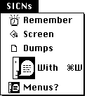

|
|
This Technical Note describes a new facility of the Menu Manager which allows
you to add reduced icons and small icons to your menus.
[Aug 01 1989]
|
Introduction
Since the release of MultiFinder, you may have noticed the appearance of small
icons ('SICN') in the menus of some System Software. At that time,
the Menu Manager was modified to allow the capability of showing both
'SICN' resources and 'ICON' resources reduced to
'SICN' size.
Back to top
How to Add Less
To add one of the smaller icons to a menu item with Rez or ResEdit, do the
following:
Reduced Icon
- Place a value of $1D into the
cmdChr field of the
menuItem.
- Place the resource ID number of the
'ICON' to use, minus 256, into
the itemIcon field of the menuItem.
Small Icon
- Place a value of $1E into the
cmdChr field of the
menuItem.
- Place the resource ID number of the
'SICN' to use, minus 256, into
the itemIcon field of the menuItem.
In the ResEdit 'MENU' template, the cmdChr field is called
"Key equiv" and the itemIcon field is called "Icon#."
For setting or changing the menu from within your program, use the following:
SetItemCmd(theMenu,item,$1D) { mark menu item as having a reduced icon}
|
or
SetItemCmd(theMenu,item,$1E) { mark menu item as having a SICN }
|
Note that the resource ID that you indicate to the Menu Manager is 256 less
than the icon's real resource ID. This means that you can only use icons
starting with resource ID of 257 (remember that a zero indicates no icon).
Figure 1 illustrates a menu with 'SICN' resources in the first three
items, a normal 'ICON' in the fourth item, and a reduced version of
the normal 'ICON' in the fifth item.

Figure 1. Menu Containing a 'SICN', an 'ICON', and a Reduced 'ICON'
Back to top
You Win Some; You Lose Some
Note that this new facility does not come for free. A menu item that contains
a 'SICN' or a reduced icon cannot also have a command key equivalent.
Because the addition of a smaller icon must be somehow recorded into the
existing menu record, the cmdChr field of your menu item that used to
contain the command key equivalent is now used to indicate both the command key
to use or the use of a smaller icon.
Back to top References
Inside Macintosh, Volume I, The Menu Manager
Inside Macintosh Volume V, The Menu Manager
Back to top
Downloadables
|

|
Acrobat version of this Note (64K).
|
Download
|
|